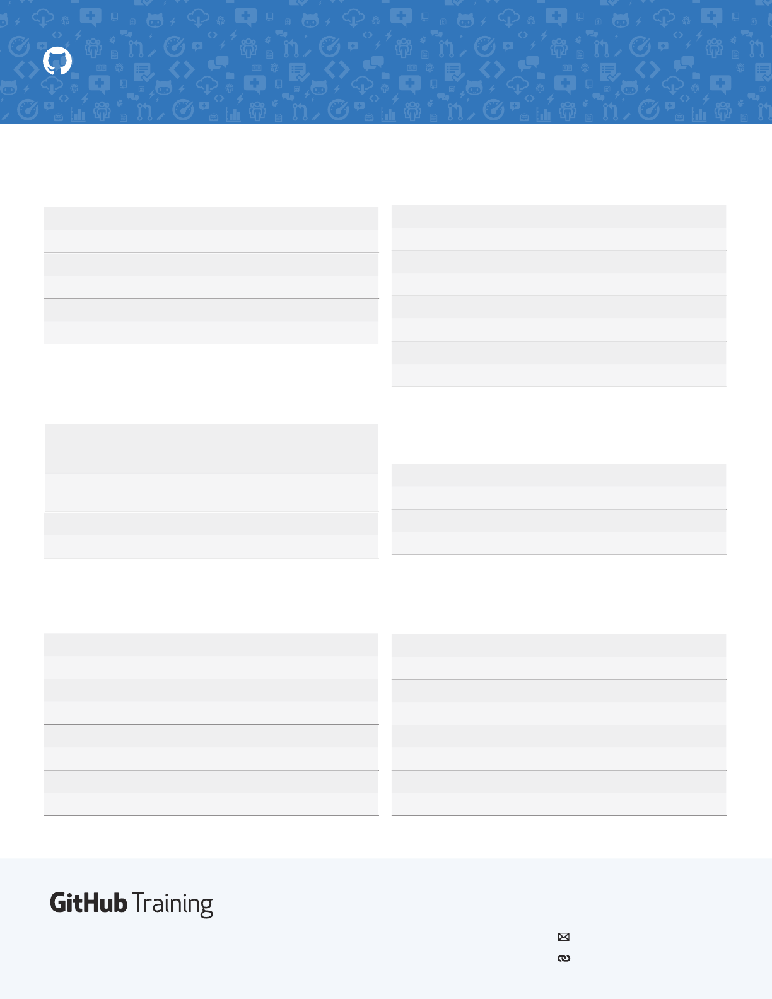

training@github.com
training.github.com
Learn more about using GitHub and Git. Email the Training Team or visit
our web site for learning event schedules and private class availability.
GIT CHEAT SHEET
SYNCHRONIZE CHANGES
Register a repository bookmark and exchange version history
$ git fetch [bookmark]
Downloads all history from the repository bookmark
$ git merge [bookmark]/[branch]
Combines bookmark’s branch into current local branch
$ git push [alias] [branch]
Uploads all local branch commits to GitHub
$ git pull
Downloads bookmark history and incorporates changes
REFACTOR FILENAMES
Relocate and remove versioned files
$ git rm [file]
Deletes the file from the working directory and stages the deletion
$ git rm --cached [file]
Removes the file from version control but preserves the file locally
$ git mv [file-original] [file-renamed]
Changes the file name and prepares it for commit
SAVE FRAGMENTS
Shelve and restore incomplete changes
$ git stash
Temporarily stores all modified tracked files
$ git stash list
Lists all stashed changesets
$ git stash pop
Restores the most recently stashed files
$ git stash drop
Discards the most recently stashed changeset
REDO COMMITS
Erase mistakes and cra replacement history
$ git reset [commit]
Undoes all commits aer
[commit]
, preserving changes locally
$ git reset --hard [commit]
Discards all history and changes back to the specified commit
REVIEW HISTORY
Browse and inspect the evolution of project files
$ git log
Lists version history for the current branch
$ git log --follow [file]
Lists version history for a file, including renames
$ git diff [first-branch]...[second-branch]
Shows content differences between two branches
$ git show [commit]
Outputs metadata and content changes of the specified commit
SUPPRESS TRACKING
Exclude temporary files and paths
$ git ls-files --other --ignored --exclude-standard
Lists all ignored files in this project
*.log
build/
temp-*
A text file named
.gitignore
suppresses accidental versioning of
files and paths matching the specified paerns